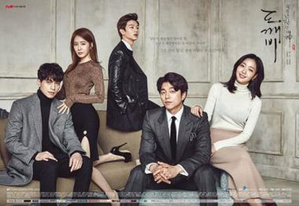
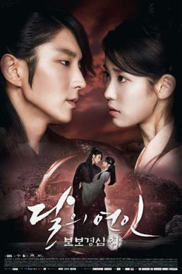
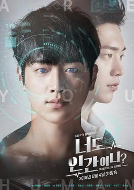
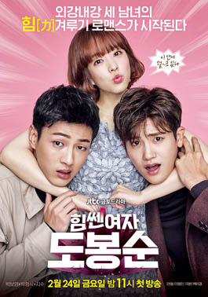
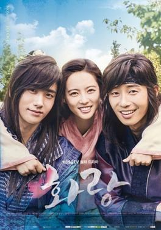

|  |
Guardian: The Lonely and Great GodPlot: An immortal goblin, helping people with his powers and being a kind man in spite of his grieving past. Ji Eun-tak (Kim Go-eun) is a bubbly high school student who remains cheerful and hopeful despite her tragic life. She summons the Goblin by chance and their fates begin to entwine. The Goblin's nephew, Yoo Deok-hwa (Yook Sung-jae), leases the Goblin's house to a Grim Reaper (Lee Dong-wook) and the two end up living under the same roof. Ji Eun-tak starts working a part-time job at a chicken store run by a charismatic young woman, Sunny (Yoo In-na). As the lives of Kim Shin, Grim Reaper, Ji Eun-tak and Sunny interweave, a deeper story unfolds, as they are not just strangers who met by chance, but people with deep-rooted relations.Genre:Fantacy.Romance Episodes: 16 Ost:Favourite ost of this drama |
|  |
Moon Lovers: Scarlet Heart RyeoPlot: During a total solar eclipse, a 25-year-old 21st-century woman, Go Ha-jin (Lee Ji-eun), is transported back in time, to the Goryeo Dynasty. She wakes up in the year of 941, in the body of Hae Soo, among the many princes of the ruling Wang family, during the reign of King Taejo. She initially falls in love with the gentle and warm-hearted 8th Prince Wang Wook (Kang Ha-neul), but later develops a relationship with Wang So (Lee Joon-gi), the fearsome 4th Prince, who hides his face behind a mask and is given the derogatory label of "wolf-dog". As the story develops, Hae Soo finds herself unwittingly caught up in the palace politics and the rivalry among the princes, as they fight for the throne.Genre:Historical,Fantacy,Time Travel Episode:20 Ost:Favourite ost of this drama |
|  |
Are You Human?Plot: Oh Laura, a renowned scientist, was forced to part with her young son, Nam Shin. To cope with her loss, over the years, she builds various AI robots modelled after him, naming them Nam Shin I, II and III. Decades later, after surviving an attempt on his life, Nam Shin slips into a coma. To protect his position as the heir to a chaebol, Laura sends Nam Shin III to take his place and fulfil his duties. Kang So-bong was a member of Nam Shin's security detail until she was dismissed in disgrace. She becomes Nam Shin III's bodyguard, determined to get to the bottom of his strange comments and behaviour. However, she gets more than what she'd bargained for when she starts falling for him - and has to keep him safe from the very people who'd tried to murder Nam Shin.Genre:Sci-fiction,Romance,Politics,Mystery Episodes: 36 Ost:Favourite ost of this drama |
|  |
Strong Girl Bong-soonPlot: Do Bong-soon was born with superhuman strength. Her strength is hereditary and passed along only to the women in her family. Her dream is to create a video game with herself as the main character. She desperately wants to become a delicate and elegant woman, which is the ideal type of her crush, In Guk-doo, a police officer. Thanks to her strength, she gets a job as bodyguard to rich heir Ahn Min-hyuk , the CEO of a gaming company, Ainsoft. A series of kidnapping cases happen in Dobong-dong, the district Bong-soon lives in, and she is determined to catch the culprit, who targeted her best friend. With help and training from Min-hyuk, she manages to control her strength to use it for good causes. Min-hyuk and Bong-soon find their relationship growing into something more. Their relationship at work and in pursuit of the kidnapper creates comical and dangerous situations, which bring them closer.Genre:Crime,Fantacy,Action,Comedy Episode:16 Ost:Favourite ost of this drama |
|  |
Hwarang: The Poet Warrior YouthPlot: As the young King comes of age, citizens, officials and Sammaekjong himself, have all grown impatient for her to cede power. However, the powerful nobles that tried to usurp the power continue to eye the throne, and Jiso fears the consequences of her ceding it. In order to break the power of the nobles, who have grown accustomed to their privileges under the bone rank system, Jiso plans to create a new elite group, the Hwarang, that will cut across the existing power factions, and to bind them to protect her son and the throne. As this new elite group of male youths bond and grow,[9] they are unaware that within their number is their King, Sammaekjong, and Kim Sun-woo, a commoner with a secret even he is not aware of. It is later revealed that Kim Sunwo is also a true bone and has the right over the throne, the officials tries to bribe Sunwoo by saying that they will make him the king. The ending is filled with so many twists.Genre:Historical,Romance Episodes: 20 Ost:Favourite ost of this drama |